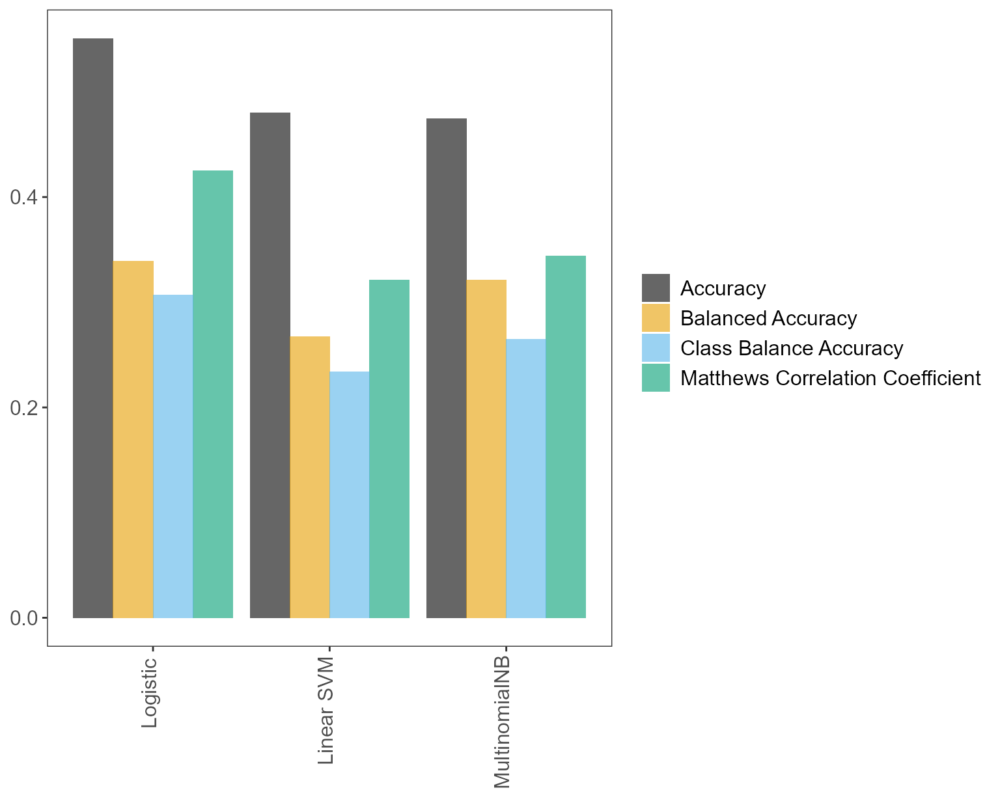
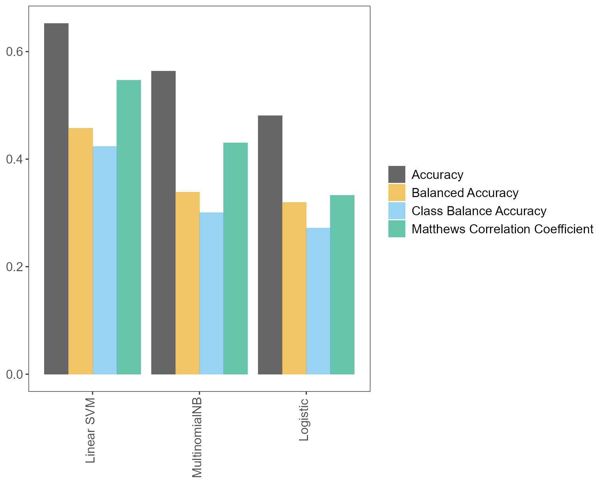

pxtextmineR-vignette.RmdWelcome to pxtextmineR’s vignette!
Package pxtextmineR is an R wrapper for Python’s pxtextmining library- a pipeline to classify text-based patient experience data. The pipeline uses the state-of-the-art Machine Learning Python library Scikit-learn (Pedregosa et al., 2011), which offers numerous top-notch models and methods for text classification.
The installation instructions are here. Make sure to take a look at this bit too!
The pipeline consists of four factory_* functions that implement different stages to build the pipeline:
factory_data_load_and_split_r splits the data into training and test sets.factory_pipeline_r prepares and fits a text classification pipeline.factory_model_performance_r evaluates the performance of a fitted pipeline.factory_predict_unlabelled_text_r predicts unlabelled text using the fitted pipeline.Function text_classification_pipeline_r conveniently brings together the first three of the aforementioned factories.
Let’s see how to split data into training and test sets with pxtextmineR. We will use the package’s dataset text_data, which is an open dataset with patient feedback text from different NHS (National Health Service) trusts in England, UK.
# Prepare training and test sets
data_splits <- pxtextmineR::factory_data_load_and_split_r(
filename = pxtextmineR::text_data,
target = "label",
predictor = "feedback",
test_size = 0.90) # Make a small training set for a faster run in this example
# Let's take a look at the returned list
str(data_splits)
#> List of 6
#> $ x_train :'data.frame': 1033 obs. of 1 variable:
#> ..$ predictor: chr [1:1033] "Everything, cannot be better. Thank you. " "Super nurses and doctors" "Ward is fantastic. Staff very welcoming and friendly and lays willing to help nothing is ever to much for them." "Bays are too cold, especially at night." ...
#> ..- attr(*, "pandas.index")=Int64Index([ 1521, 7492, 7862, 8066, 790, 10004, 3828, 2899, 1947,
#> 1220,
#> ...
#> 3490, 7788, 2980, 6742, 6705, 3124, 6197, 40, 6643,
#> 6298],
#> dtype='int64', length=1033)
#> $ x_test :'data.frame': 9301 obs. of 1 variable:
#> ..$ predictor: chr [1:9301] "Great all round." "Seeing people get discharged. Supportive and understanding team. Activities on ward." "Huge thank you to Dr Croft and Dr Bohane (sorry if I spelt that wrong). Who have supported my family and I to g"| __truncated__ "The lady who treated me was kind, poilite & courteous" ...
#> ..- attr(*, "pandas.index")=Int64Index([8413, 1865, 1800, 1693, 1904, 7018, 634, 2463, 4823, 3286,
#> ...
#> 4659, 6728, 6477, 7705, 4088, 3552, 725, 2522, 153, 5746],
#> dtype='int64', length=9301)
#> $ y_train : chr [1:1033(1d)] "Miscellaneous" "Staff" "Care received" "Environment/ facilities" ...
#> ..- attr(*, "dimnames")=List of 1
#> .. ..$ : chr [1:1033] "1521" "7492" "7862" "8066" ...
#> $ y_test : chr [1:9301(1d)] "Care received" "Care received" "Staff" "Staff" ...
#> ..- attr(*, "dimnames")=List of 1
#> .. ..$ : chr [1:9301] "8413" "1865" "1800" "1693" ...
#> $ index_training_data: int [1:1033] 1521 7492 7862 8066 790 10004 3828 2899 1947 1220 ...
#> $ index_test_data : int [1:9301] 8413 1865 1800 1693 1904 7018 634 2463 4823 3286 ...From the printed results we note the following:
Objects x_train and x_test contain the predictor with the feedback text, and are data frames. The text column is internally renamed to “predictor”. This is to ensure that the pipeline will not break if the user supplies a dataset with a different name for the text column.
Objects y_train and y_test contain the response variable and are 1D arrays.
When Scikit-learn splits the data, it assigns index values to the them. This is convenient for knowing which of the data records belong to the training set and which to the test set. The indices are available in objects index_training_data and index_test_data, but are also conveniently available as (row) names in objects x_train/test and y_train/test:
# Each record in the split data is tagged with the row index of the original dataset
head(rownames(data_splits$x_train))
#> [1] "1521" "7492" "7862" "8066" "790" "10004"
head(names(data_splits$y_train))
#> [1] "1521" "7492" "7862" "8066" "790" "10004"
# Note that, in Python, indices start from 0 and go up to number_of_records - 1
all_indices <- data_splits$y_train %>%
names() %>%
c(names(data_splits$y_test)) %>%
as.numeric() %>%
sort()
head(all_indices) # Starts from zero
#> [1] 0 1 2 3 4 5
tail(all_indices) # Ends in nrow(text_data) - 1
#> [1] 10328 10329 10330 10331 10332 10333
length(all_indices) == nrow(text_data)
#> [1] TRUEFunction factory_pipeline_r can do standard or ordinal classification of text data, with a range of models that perform well in text classification settings (logistic regression, Support Vector Machines, Naive Bayes models, Random Forest). Logistic regression and linear support vector classification are implemented with sklearn.linear_model.SGDClassifier, which employs the former model using “log” loss and the latter using “hinge” loss (see the User Guide). Both types of loss are set internally in the tuning grid of the pipeline.
The pipeline tries both Bag-of-Words (BoW) and word vectors. Both options are internally set as tunable parameters. For BoW, the default tokenizer is spaCy, although the option if NLTK is also available. At the time of development we were experimenting as to which would result in faster and better results. With our data (pxtextmineR::text_data), spaCy does a better job, faster. Generally, although we have kept the option of NLTK, you are probably better off with spaCy.
Most tunable (hyper)parameters are set internally and cannot be changed by the user. We did this for a very practical reason: you can spend hours if not days trying out more values in the search grid that minimally increase the performance of the pipeline (e.g. from 75% accuracy to 76%). We therefore opted for value ranges that are observed to work well in practice. In any case, if you are expert in a particular model and believe that changing one or more of these values would improve the pipeline, you are more than welcome to make a pull request!
Finally, the best (hyper)parameter values for the pipeline during training with cross-validation (CV) can be determined with a range of metrics, from the standard accuracy score to a few metrics that account for class imbalances. See the documentation.
Let’s fit the pipeline! We will try two classifiers, namely SGDClassifier and sklearn.naive_bayes.MultinomialNB, with a two-fold CV and 10 iterations, resulting in 2 X 10 = 20 fits. As mentioned earlier, SGDClassifier can be either logistic regression or linear SVC. Let’s see which one will win!
(NOTE: If your machine does not have the number of cores specified in n_jobs, then an error will be returned. For error-free experimentation, try with n_jobs = 1.)
pipe <- pxtextmineR::factory_pipeline_r(
x = data_splits$x_train,
y = data_splits$y_train,
tknz = "spacy",
ordinal = FALSE,
metric = "accuracy_score",
cv = 2, n_iter = 10, n_jobs = 1, verbose = 3,
learners = c("SGDClassifier", "MultinomialNB")
)
# Mean cross-validated score of the best_estimator
pipe$best_score_
#> [1] 0.5507999
# Best parameters during tuning
pipe$best_params_
#> $sampling__kw_args
#> $sampling__kw_args$up_balancing_counts
#> [1] 800
#>
#>
#> $preprocessor__texttr__text__transformer__use_idf
#> [1] TRUE
#>
#> $preprocessor__texttr__text__transformer__tokenizer
#> <pxtextmining.helpers.tokenization.LemmaTokenizer>
#>
#> $preprocessor__texttr__text__transformer__preprocessor
#> <function text_preprocessor at 0x00000000664484C0>
#>
#> $preprocessor__texttr__text__transformer__norm
#> [1] "l2"
#>
#> $preprocessor__texttr__text__transformer__ngram_range
#> $preprocessor__texttr__text__transformer__ngram_range[[1]]
#> [1] 1
#>
#> $preprocessor__texttr__text__transformer__ngram_range[[2]]
#> [1] 3
#>
#>
#> $preprocessor__texttr__text__transformer__min_df
#> [1] 1
#>
#> $preprocessor__texttr__text__transformer__max_df
#> [1] 0.95
#>
#> $preprocessor__texttr__text__transformer
#> TfidfVectorizer(max_df=0.95, ngram_range=(1, 3),
#> preprocessor=<function text_preprocessor at 0x00000000664484C0>,
#> tokenizer=<pxtextmining.helpers.tokenization.LemmaTokenizer>)
#>
#> $preprocessor__sentimenttr__scaler__scaler__n_bins
#> [1] 4
#>
#> $preprocessor__sentimenttr__scaler__scaler
#> KBinsDiscretizer(n_bins=4, strategy='kmeans')
#>
#> $preprocessor__lengthtr__scaler__scaler
#> KBinsDiscretizer(n_bins=3, strategy='kmeans')
#>
#> $featsel__selector__score_func
#> <function chi2 at 0x000000006642F5E0>
#>
#> $featsel__selector__percentile
#> [1] 70
#>
#> $featsel__selector
#> SelectPercentile(percentile=70,
#> score_func=<function chi2 at 0x000000006642F5E0>)
#>
#> $clf__estimator__penalty
#> [1] "elasticnet"
#>
#> $clf__estimator__max_iter
#> [1] 10000
#>
#> $clf__estimator__loss
#> [1] "log"
#>
#> $clf__estimator__class_weight
#> NULL
#>
#> $clf__estimator
#> SGDClassifier(loss='log', max_iter=10000, penalty='elasticnet')
# Make predictions
preds <- pipe$predict(data_splits$x_test)
head(preds)
#> [1] "Care received" "Staff" "Access"
#> [4] "Staff" "Access" "Couldn't be improved"
# Performance on test set #
# Can be done using the pipe's score() method
pipe$score(data_splits$x_test, data_splits$y_test)
#> [1] 0.5317708
# Or using dplyr
data_splits$y_test %>%
data.frame() %>%
dplyr::rename(true = '.') %>%
dplyr::mutate(
pred = preds,
check = true == preds,
check = sum(check) / nrow(.)
) %>%
dplyr::pull(check) %>%
unique
#> [1] 0.5317708
# We can also use other metrics, such as the Class Balance Accuracy score
pxtextmineR::class_balance_accuracy_score_r(
data_splits$y_test,
preds
)
#> [1] 0.3534209Let’s pass our fitted pipeline pipe to factory_model_performance_r to evaluate how well it did.
# Assess model performance
pipe_performance <- pxtextmineR::factory_model_performance_r(
pipe = pipe,
x_train = data_splits$x_train,
y_train = data_splits$y_train,
x_test = data_splits$x_test,
y_test = data_splits$y_test,
metric = "accuracy_score")
names(pipe_performance)
#> [1] "pipe" "tuning_results" "pred"
#> [4] "accuracy_per_class" "p_compare_models_bar"
# Let's compare pipeline performance for different tunings with a range of
# metrics averaging the cross-validation metrics for each fold.
pipe_performance$
tuning_results %>%
dplyr::select(learner, dplyr::contains("mean_test"))
#> learner mean_test_Accuracy mean_test_Balanced Accuracy
#> 8 Logistic 0.5507999 0.3391156
#> 4 Linear SVM 0.4801760 0.2670942
#> 7 MultinomialNB 0.4743545 0.3213362
#> 6 Logistic 0.4617632 0.2859347
#> 3 Linear SVM 0.4540169 0.2600976
#> 1 Linear SVM 0.4520771 0.2447616
#> 9 Linear SVM 0.4443326 0.2197800
#> 2 Logistic 0.4288756 0.2125337
#> 0 Linear SVM 0.3969495 0.2029141
#> 5 Logistic 0.3824239 0.2103374
#> mean_test_Matthews Correlation Coefficient mean_test_Class Balance Accuracy
#> 8 0.4250879 0.3068169
#> 4 0.3210595 0.2338451
#> 7 0.3436740 0.2647703
#> 6 0.3174870 0.2520342
#> 3 0.2860687 0.2188777
#> 1 0.2846360 0.1963320
#> 9 0.2589440 0.1768461
#> 2 0.2461072 0.1659125
#> 0 0.2249788 0.1743526
#> 5 0.2182756 0.1740442
# A glance at the (hyper)parameters and their tuned values
pipe_performance$
tuning_results %>%
dplyr::select(learner, dplyr::contains("param_")) %>%
str()
#> 'data.frame': 10 obs. of 22 variables:
#> $ learner : chr "Logistic" "Linear SVM" "MultinomialNB" "Logistic" ...
#> $ param_sampling__kw_args : chr "{'up_balancing_counts': 800}" "{'up_balancing_counts': 800}" "{'up_balancing_counts': 300}" "{'up_balancing_counts': 800}" ...
#> $ param_preprocessor__texttr__text__transformer__use_idf :List of 10
#> ..$ : logi TRUE
#> ..$ : logi FALSE
#> ..$ : logi FALSE
#> ..$ : logi FALSE
#> ..$ : logi FALSE
#> ..$ : logi TRUE
#> ..$ : logi FALSE
#> ..$ : logi FALSE
#> ..$ : logi FALSE
#> ..$ : logi FALSE
#> $ param_preprocessor__texttr__text__transformer__tokenizer : chr "<pxtextmining.helpers.tokenization.LemmaTokenizer object at 0x00000000659CE760>" "<pxtextmining.helpers.tokenization.LemmaTokenizer object at 0x00000000659CE760>" "<pxtextmining.helpers.tokenization.LemmaTokenizer object at 0x0000000065C791C0>" "<pxtextmining.helpers.tokenization.LemmaTokenizer object at 0x00000000659CE760>" ...
#> $ param_preprocessor__texttr__text__transformer__preprocessor: chr "<function text_preprocessor at 0x00000000664484C0>" "<function text_preprocessor at 0x00000000664484C0>" "<function text_preprocessor at 0x00000000664484C0>" "<function text_preprocessor at 0x00000000664484C0>" ...
#> $ param_preprocessor__texttr__text__transformer__norm :List of 10
#> ..$ : chr "l2"
#> ..$ : chr "l2"
#> ..$ : chr "l2"
#> ..$ : chr "l2"
#> ..$ : chr "l2"
#> ..$ : chr "l2"
#> ..$ : NULL
#> ..$ : NULL
#> ..$ : chr "l2"
#> ..$ : chr "l2"
#> $ param_preprocessor__texttr__text__transformer__ngram_range : chr "(1, 3)" "(2, 3)" "(1, 3)" "(2, 3)" ...
#> $ param_preprocessor__texttr__text__transformer__min_df :List of 10
#> ..$ : int 1
#> ..$ : int 3
#> ..$ : int 1
#> ..$ : int 1
#> ..$ : int 3
#> ..$ : int 1
#> ..$ : int 3
#> ..$ : int 3
#> ..$ : int 1
#> ..$ : int 3
#> $ param_preprocessor__texttr__text__transformer__max_df :List of 10
#> ..$ : num 0.95
#> ..$ : num 0.7
#> ..$ : num 0.7
#> ..$ : num 0.7
#> ..$ : num 0.7
#> ..$ : num 0.7
#> ..$ : num 0.95
#> ..$ : num 0.7
#> ..$ : num 0.7
#> ..$ : num 0.7
#> $ param_preprocessor__texttr__text__transformer : chr "TfidfVectorizer(max_df=0.95, ngram_range=(1, 3),\n preprocessor=<function text_preprocessor at 0"| __truncated__ "TfidfVectorizer(max_df=0.95, ngram_range=(1, 3),\n preprocessor=<function text_preprocessor at 0"| __truncated__ "TfidfVectorizer()" "TfidfVectorizer(max_df=0.95, ngram_range=(1, 3),\n preprocessor=<function text_preprocessor at 0"| __truncated__ ...
#> $ param_preprocessor__sentimenttr__scaler__scaler__n_bins :List of 10
#> ..$ : int 4
#> ..$ : int 8
#> ..$ : int 8
#> ..$ : int 8
#> ..$ : int 4
#> ..$ : int 4
#> ..$ : int 8
#> ..$ : int 8
#> ..$ : int 8
#> ..$ : int 4
#> $ param_preprocessor__sentimenttr__scaler__scaler : chr "KBinsDiscretizer(n_bins=4, strategy='kmeans')" "KBinsDiscretizer(n_bins=4, strategy='kmeans')" "KBinsDiscretizer(strategy='kmeans')" "KBinsDiscretizer(n_bins=4, strategy='kmeans')" ...
#> $ param_preprocessor__lengthtr__scaler__scaler : chr "KBinsDiscretizer(n_bins=3, strategy='kmeans')" "KBinsDiscretizer(n_bins=3, strategy='kmeans')" "KBinsDiscretizer(n_bins=3, strategy='kmeans')" "KBinsDiscretizer(n_bins=3, strategy='kmeans')" ...
#> $ param_featsel__selector__score_func : chr "<function chi2 at 0x000000006642F5E0>" "<function chi2 at 0x000000006642F5E0>" "<function chi2 at 0x000000006642F5E0>" "<function chi2 at 0x000000006642F5E0>" ...
#> $ param_featsel__selector__percentile :List of 10
#> ..$ : int 70
#> ..$ : int 85
#> ..$ : int 70
#> ..$ : int 100
#> ..$ : int 70
#> ..$ : int 100
#> ..$ : int 70
#> ..$ : int 85
#> ..$ : int 70
#> ..$ : int 85
#> $ param_featsel__selector : chr "SelectPercentile(percentile=70,\n score_func=<function chi2 at 0x000000006642F5E0>)" "SelectPercentile(percentile=70,\n score_func=<function chi2 at 0x000000006642F5E0>)" "SelectPercentile(percentile=70,\n score_func=<function chi2 at 0x000000006642F5E0>)" "SelectPercentile(percentile=70,\n score_func=<function chi2 at 0x000000006642F5E0>)" ...
#> $ param_clf__estimator__penalty :List of 10
#> ..$ : chr "elasticnet"
#> ..$ : chr "l2"
#> ..$ : num NaN
#> ..$ : chr "l2"
#> ..$ : chr "l2"
#> ..$ : chr "l2"
#> ..$ : chr "elasticnet"
#> ..$ : chr "l2"
#> ..$ : chr "l2"
#> ..$ : chr "elasticnet"
#> $ param_clf__estimator__max_iter :List of 10
#> ..$ : int 10000
#> ..$ : int 10000
#> ..$ : num NaN
#> ..$ : int 10000
#> ..$ : int 10000
#> ..$ : int 10000
#> ..$ : int 10000
#> ..$ : int 10000
#> ..$ : int 10000
#> ..$ : int 10000
#> $ param_clf__estimator__loss :List of 10
#> ..$ : chr "log"
#> ..$ : chr "hinge"
#> ..$ : num NaN
#> ..$ : chr "log"
#> ..$ : chr "hinge"
#> ..$ : chr "hinge"
#> ..$ : chr "hinge"
#> ..$ : chr "log"
#> ..$ : chr "hinge"
#> ..$ : chr "log"
#> $ param_clf__estimator__class_weight : chr "None" "balanced" "nan" "balanced" ...
#> $ param_clf__estimator : chr "SGDClassifier(loss='log', max_iter=10000, penalty='elasticnet')" "SGDClassifier(loss='log', max_iter=10000, penalty='elasticnet')" "MultinomialNB()" "SGDClassifier(loss='log', max_iter=10000, penalty='elasticnet')" ...
#> $ param_clf__estimator__alpha :List of 10
#> ..$ : num NaN
#> ..$ : num NaN
#> ..$ : num 0.5
#> ..$ : num NaN
#> ..$ : num NaN
#> ..$ : num NaN
#> ..$ : num NaN
#> ..$ : num NaN
#> ..$ : num NaN
#> ..$ : num NaN
#> - attr(*, "pandas.index")=Int64Index([8, 4, 7, 6, 3, 1, 9, 2, 0, 5], dtype='int64')The following bar plot reports the performance of the best of each fitted classifier with four different metrics. Thus, if, say, two classifiers were tried out, e.g. Multinomial Naive Bayes and Random Forest, and each one was fit with, say, 10 different tunings, the bar plot would plot the best of the Multinomial Naive Bayes and the best of the Random Forest models; the “best” being defined here according to the specified metric argument that was used to fit the pipeline (see factory_pipeline_r and factory_model_performance_r). The models are ordered in descending order, from left to right, according to the specified metric.
# Learner performance barplot
pipe_performance$p_compare_models_bar
Remember that we tried three models: Logistic regression (SGDClassifier with “log” loss), linear SVM (SGDClassifier with “hinge” loss) and MultinomialNB. Do not be surprised if one of these models does not show on the plot. There are numerous values for the different (hyper)parameters (recall, most of which are set internally) and only n_iter = 10 iterations in this example. As with factory_pipeline_r the choice of which (hyper)parameter values to try out is random, one or more classifiers may not be chosen. Increasing n_iter to a larger number would avoid this, at the expense of longer fitting times (but with a possibly more accurate pipeline).
# Predictions on test set
preds <- pipe_performance$pred
head(preds)
#> [1] "Care received" "Care received" "Access"
#> [4] "Staff" "Care received" "Couldn't be improved"
################################################################################
# NOTE!!! #
################################################################################
# After calculating performance metrics on the test set,
# pxtextmineR::factory_model_performance_r fits the pipeline on the WHOLE
# dataset (train + test). Hence, do not be surprised that the pipeline's
# score() method will now return a dramatically improved score on the test
# set- the refitted pipeline has now "seen" the test dataset.
pipe_performance$pipe$score(data_splits$x_test, data_splits$y_test)
#> [1] 0.7208902
pipe$score(data_splits$x_test, data_splits$y_test)
#> [1] 0.7208902
# We can confirm this score by having the re-fitted pipeline predict x_test
# again. The predictions will be better and the new accuracy score will be
# the inflated one.
preds_refitted <- pipe$predict(data_splits$x_test)
score_refitted <- data_splits$y_test %>%
data.frame() %>%
dplyr::rename(true = '.') %>%
dplyr::mutate(
pred = preds_refitted,
check = true == preds_refitted,
check = sum(check) / nrow(.)
) %>%
dplyr::pull(check) %>%
unique()
score_refitted
#> [1] 0.7208902
# Compare this to the ACTUAL performance on the test dataset
preds_actual <- pipe_performance$pred
score_actual <- data_splits$y_test %>%
data.frame() %>%
dplyr::rename(true = '.') %>%
dplyr::mutate(
pred = preds_actual,
check = true == preds_actual,
check = sum(check) / nrow(.)
) %>%
dplyr::pull(check) %>%
unique()
score_actual
#> [1] 0.5554241
score_refitted - score_actual
#> [1] 0.1654661This is where factory_predict_unlabelled_text_r comes in handy.
# Make predictions #
# Return data frame with predictions column and all original columns from
# the supplied data frame
preds_all_cols <- pxtextmineR::factory_predict_unlabelled_text_r(
dataset = pxtextmineR::text_data,
predictor = "feedback",
pipe_path_or_object = pipe,
column_names = "all_cols")
str(preds_all_cols)
#> 'data.frame': 10334 obs. of 4 variables:
#> $ feedback_preds: chr "Couldn't be improved" "Care received" "Care received" "Care received" ...
#> $ label : chr "Couldn't be improved" "Environment/ facilities" "Access" "Communication" ...
#> $ criticality : chr "3" "-1" "-2" "-1" ...
#> $ feedback : chr "Nothing." "Temperature in theatre a little low." "Same service available at Bingham Health Centre." "Appointment details given over phone - no physical evidence/reminder which could cause problems. Other than tha"| __truncated__ ...
#> - attr(*, "pandas.index")=RangeIndex(start=0, stop=10334, step=1)
# Return data frame with predictions column only
preds_preds_only <- pxtextmineR::factory_predict_unlabelled_text_r(
dataset = pxtextmineR::text_data,
predictor = "feedback",
pipe_path_or_object = pipe,
column_names = "preds_only")
head(preds_preds_only)
#> feedback_preds
#> 1 Couldn't be improved
#> 2 Care received
#> 3 Care received
#> 4 Care received
#> 5 Care received
#> 6 Transition/coordination
# Return data frame with predictions column and columns label and feedback from
# the supplied data frame
preds_label_text <- pxtextmineR::factory_predict_unlabelled_text_r(
dataset = pxtextmineR::text_data,
predictor = "feedback",
pipe_path_or_object = pipe,
column_names = c("label", "feedback"))
str(preds_label_text)
#> 'data.frame': 10334 obs. of 3 variables:
#> $ feedback_preds: chr "Couldn't be improved" "Care received" "Care received" "Care received" ...
#> $ label : chr "Couldn't be improved" "Environment/ facilities" "Access" "Communication" ...
#> $ feedback : chr "Nothing." "Temperature in theatre a little low." "Same service available at Bingham Health Centre." "Appointment details given over phone - no physical evidence/reminder which could cause problems. Other than tha"| __truncated__ ...
#> - attr(*, "pandas.index")=RangeIndex(start=0, stop=10334, step=1)
# Return data frame with the predictions column name supplied by the user
preds_custom_preds_name <- pxtextmineR::factory_predict_unlabelled_text_r(
dataset = pxtextmineR::text_data,
predictor = "feedback",
pipe_path_or_object = pipe,
column_names = "preds_only",
preds_column = "predictions")
head(preds_custom_preds_name)
#> predictions
#> 1 Couldn't be improved
#> 2 Care received
#> 3 Care received
#> 4 Care received
#> 5 Care received
#> 6 Transition/coordinationFunction text_classification_pipeline_r conveniently runs factory_data_load_and_split_r, factory_pipeline_r and factory_model_performance_r in one go.
# We can prepare the data, build and fit the pipeline, and get performance
# metrics, in two ways. One way is to run the factory_* functions independently
# The commented out script right below would do exactly that.
# Prepare training and test sets
# data_splits <- pxtextmineR::factory_data_load_and_split_r(
# filename = pxtextmineR::text_data,
# target = "label",
# predictor = "feedback",
# test_size = 0.90) # Make a small training set for a faster run in this example
#
# # Fit the pipeline
# pipe <- pxtextmineR::factory_pipeline_r(
# x = data_splits$x_train,
# y = data_splits$y_train,
# tknz = "spacy",
# ordinal = FALSE,
# metric = "accuracy_score",
# cv = 2, n_iter = 10, n_jobs = 1, verbose = 3,
# learners = c("SGDClassifier", "MultinomialNB")
# )
#
# # Assess model performance
# pipe_performance <- pxtextmineR::factory_model_performance_r(
# pipe = pipe,
# x_train = data_splits$x_train,
# y_train = data_splits$y_train,
# x_test = data_splits$x_test,
# y_test = data_splits$y_test,
# metric = "class_balance_accuracy_score")
# Alternatively, we can use text_classification_pipeline_r() to do everything in
# one go.
text_pipe <- pxtextmineR::text_classification_pipeline_r(
filename = pxtextmineR::text_data,
target = 'label',
predictor = 'feedback',
test_size = 0.33,
ordinal = FALSE,
tknz = "spacy",
metric = "class_balance_accuracy_score",
cv = 2, n_iter = 10, n_jobs = 1, verbose = 3,
learners = c("SGDClassifier", "MultinomialNB"),
reduce_criticality = FALSE,
theme = NULL
)
names(text_pipe)
#> [1] "pipe" "tuning_results" "pred"
#> [4] "accuracy_per_class" "p_compare_models_bar" "index_training_data"
#> [7] "index_test_data"
# Let's compare pipeline performance for different tunings with a range of
# metrics averaging the cross-validation metrics for each fold.
text_pipe$
tuning_results %>%
dplyr::select(learner, dplyr::contains("mean_test"))
#> learner mean_test_Accuracy mean_test_Balanced Accuracy
#> 1 Linear SVM 0.6526066 0.4570045
#> 5 Linear SVM 0.6003183 0.3754105
#> 8 Linear SVM 0.5766278 0.3624667
#> 2 MultinomialNB 0.5636296 0.3382470
#> 9 Logistic 0.4805714 0.3197915
#> 6 Logistic 0.5093159 0.2907475
#> 7 Linear SVM 0.4730608 0.2918243
#> 0 Linear SVM 0.5020944 0.2796527
#> 3 MultinomialNB 0.5423962 0.2567648
#> 4 MultinomialNB 0.5174073 0.2223761
#> mean_test_Matthews Correlation Coefficient mean_test_Class Balance Accuracy
#> 1 0.5465140 0.4235396
#> 5 0.4738895 0.3404655
#> 8 0.4446102 0.3167579
#> 2 0.4299264 0.3005711
#> 9 0.3330483 0.2716780
#> 6 0.3548452 0.2401257
#> 7 0.3200443 0.2387569
#> 0 0.3441047 0.2279749
#> 3 0.3882195 0.2005050
#> 4 0.3664081 0.1622427
# A glance at the (hyper)parameters and their tuned values
text_pipe$
tuning_results %>%
dplyr::select(learner, dplyr::contains("param_")) %>%
str()
#> 'data.frame': 10 obs. of 22 variables:
#> $ learner : chr "Linear SVM" "Linear SVM" "Linear SVM" "MultinomialNB" ...
#> $ param_sampling__kw_args : chr "{'up_balancing_counts': 800}" "{'up_balancing_counts': 300}" "{'up_balancing_counts': 300}" "{'up_balancing_counts': 300}" ...
#> $ param_preprocessor__texttr__text__transformer__use_idf :List of 10
#> ..$ : logi FALSE
#> ..$ : logi TRUE
#> ..$ : logi FALSE
#> ..$ : logi FALSE
#> ..$ : logi FALSE
#> ..$ : logi FALSE
#> ..$ : logi FALSE
#> ..$ : logi FALSE
#> ..$ : logi TRUE
#> ..$ : logi FALSE
#> $ param_preprocessor__texttr__text__transformer__tokenizer : chr "<pxtextmining.helpers.tokenization.LemmaTokenizer object at 0x0000000105F14D60>" "<pxtextmining.helpers.tokenization.LemmaTokenizer object at 0x0000000105F14D60>" "<pxtextmining.helpers.tokenization.LemmaTokenizer object at 0x0000000105F14D60>" "<pxtextmining.helpers.tokenization.LemmaTokenizer object at 0x00000000D7B4DA00>" ...
#> $ param_preprocessor__texttr__text__transformer__preprocessor: chr "<function text_preprocessor at 0x00000000664484C0>" "<function text_preprocessor at 0x00000000664484C0>" "<function text_preprocessor at 0x00000000664484C0>" "<function text_preprocessor at 0x00000000664484C0>" ...
#> $ param_preprocessor__texttr__text__transformer__norm : chr "None" "l2" "None" "None" ...
#> $ param_preprocessor__texttr__text__transformer__ngram_range : chr "(1, 3)" "(2, 3)" "(2, 3)" "(2, 3)" ...
#> $ param_preprocessor__texttr__text__transformer__min_df :List of 10
#> ..$ : int 3
#> ..$ : int 1
#> ..$ : int 1
#> ..$ : int 3
#> ..$ : int 1
#> ..$ : int 1
#> ..$ : int 3
#> ..$ : int 1
#> ..$ : int 3
#> ..$ : int 1
#> $ param_preprocessor__texttr__text__transformer__max_df :List of 10
#> ..$ : num 0.95
#> ..$ : num 0.7
#> ..$ : num 0.7
#> ..$ : num 0.95
#> ..$ : num 0.95
#> ..$ : num 0.7
#> ..$ : num 0.95
#> ..$ : num 0.95
#> ..$ : num 0.95
#> ..$ : num 0.7
#> $ param_preprocessor__texttr__text__transformer : chr "TfidfVectorizer(max_df=0.95, min_df=3, ngram_range=(1, 3), norm=None,\n preprocessor=<function t"| __truncated__ "TfidfVectorizer(max_df=0.95, min_df=3, ngram_range=(1, 3), norm=None,\n preprocessor=<function t"| __truncated__ "TfidfVectorizer(max_df=0.95, min_df=3, ngram_range=(1, 3), norm=None,\n preprocessor=<function t"| __truncated__ "TfidfVectorizer()" ...
#> $ param_preprocessor__sentimenttr__scaler__scaler__n_bins :List of 10
#> ..$ : int 8
#> ..$ : int 8
#> ..$ : int 4
#> ..$ : int 4
#> ..$ : int 8
#> ..$ : int 8
#> ..$ : int 4
#> ..$ : int 8
#> ..$ : int 4
#> ..$ : int 4
#> $ param_preprocessor__sentimenttr__scaler__scaler : chr "KBinsDiscretizer(n_bins=8, strategy='kmeans')" "KBinsDiscretizer(n_bins=8, strategy='kmeans')" "KBinsDiscretizer(n_bins=8, strategy='kmeans')" "KBinsDiscretizer(strategy='kmeans')" ...
#> $ param_preprocessor__lengthtr__scaler__scaler : chr "KBinsDiscretizer(n_bins=3, strategy='kmeans')" "KBinsDiscretizer(n_bins=3, strategy='kmeans')" "KBinsDiscretizer(n_bins=3, strategy='kmeans')" "KBinsDiscretizer(n_bins=3, strategy='kmeans')" ...
#> $ param_featsel__selector__score_func : chr "<function chi2 at 0x000000006642F5E0>" "<function chi2 at 0x000000006642F5E0>" "<function chi2 at 0x000000006642F5E0>" "<function chi2 at 0x000000006642F5E0>" ...
#> $ param_featsel__selector__percentile :List of 10
#> ..$ : int 70
#> ..$ : int 100
#> ..$ : int 85
#> ..$ : int 100
#> ..$ : int 85
#> ..$ : int 85
#> ..$ : int 70
#> ..$ : int 70
#> ..$ : int 70
#> ..$ : int 70
#> $ param_featsel__selector : chr "SelectPercentile(percentile=70,\n score_func=<function chi2 at 0x000000006642F5E0>)" "SelectPercentile(percentile=70,\n score_func=<function chi2 at 0x000000006642F5E0>)" "SelectPercentile(percentile=70,\n score_func=<function chi2 at 0x000000006642F5E0>)" "SelectPercentile(percentile=70,\n score_func=<function chi2 at 0x000000006642F5E0>)" ...
#> $ param_clf__estimator__penalty :List of 10
#> ..$ : chr "elasticnet"
#> ..$ : chr "l2"
#> ..$ : chr "elasticnet"
#> ..$ : num NaN
#> ..$ : chr "l2"
#> ..$ : chr "l2"
#> ..$ : chr "l2"
#> ..$ : chr "elasticnet"
#> ..$ : num NaN
#> ..$ : num NaN
#> $ param_clf__estimator__max_iter :List of 10
#> ..$ : int 10000
#> ..$ : int 10000
#> ..$ : int 10000
#> ..$ : num NaN
#> ..$ : int 10000
#> ..$ : int 10000
#> ..$ : int 10000
#> ..$ : int 10000
#> ..$ : num NaN
#> ..$ : num NaN
#> $ param_clf__estimator__loss :List of 10
#> ..$ : chr "hinge"
#> ..$ : chr "hinge"
#> ..$ : chr "hinge"
#> ..$ : num NaN
#> ..$ : chr "log"
#> ..$ : chr "log"
#> ..$ : chr "hinge"
#> ..$ : chr "hinge"
#> ..$ : num NaN
#> ..$ : num NaN
#> $ param_clf__estimator__class_weight : chr "None" "None" "balanced" "nan" ...
#> $ param_clf__estimator : chr "SGDClassifier(max_iter=10000, penalty='elasticnet')" "SGDClassifier(max_iter=10000, penalty='elasticnet')" "SGDClassifier(max_iter=10000, penalty='elasticnet')" "MultinomialNB()" ...
#> $ param_clf__estimator__alpha :List of 10
#> ..$ : num NaN
#> ..$ : num NaN
#> ..$ : num NaN
#> ..$ : num 0.1
#> ..$ : num NaN
#> ..$ : num NaN
#> ..$ : num NaN
#> ..$ : num NaN
#> ..$ : num 0.5
#> ..$ : int 1
#> - attr(*, "pandas.index")=Int64Index([1, 5, 8, 2, 9, 6, 7, 0, 3, 4], dtype='int64')
# Learner performance barplot
text_pipe$p_compare_models_bar
# Predictions on test set
preds <- text_pipe$pred
head(preds)
#> [1] "Care received" "Couldn't be improved" "Couldn't be improved"
#> [4] "Couldn't be improved" "Care received" "Access"
head(sort(text_pipe$index_training_data))
#> [1] 0 1 3 4 7 8
# Let's subset the original data set
text_dataset <- pxtextmineR::text_data
rownames(text_dataset) <- 0:(nrow(text_dataset) - 1)
data_train <- text_dataset[text_pipe$index_training_data, ]
data_test <- text_dataset[text_pipe$index_test_data, ]
str(data_train)
#> 'data.frame': 6922 obs. of 3 variables:
#> $ label : chr "Staff" "Staff" "Staff" "Staff" ...
#> $ criticality: chr "1" "0" "3" "3" ...
#> $ feedback : chr "Staff." "Mrs XXXX is excellent at her job." "Promote Jenna and Olivia because they are great and Kev. \nThey are very good at keeping us all busy (Jenna and"| __truncated__ "Best team of nurses" ...There are a few helper functions that Python library pxtextmining and its R wrapper pxtextmineR use in the background that are worth making available in R:
class_balance_accuracy_score_r calculates Mosley’s (2013) Class Balance Accuracy score, a metric that is particularly useful when there are class imbalances in the dataset.sentiment_scores_r calculates sentiment indicators from TextBlob and vaderSentiment.According to Mosley (2013, abstract), “[…] models chosen by maximizing the training class balance accuracy consistently yield both high overall accuracy and per class recall on the test sets compared to the models chosen by other criteria.” Our pipeline’s default metric is Class Balance Accuracy, although other metrics are also possible, namely standard accuracy, Balanced Accuracy, and Matthews Correlation Coefficient. See this User Guide.
x <- pxtextmineR::text_data %>%
dplyr::mutate(label_pred = sample(label, size = nrow(.))) # Mock predictions column
pxtextmineR::class_balance_accuracy_score_r(x$label, x$label_pred)
#> [1] 0.1124614Function sentiment_scores_r complements existing sentiment analysis packages in R (e.g. tidytextor quanteda.sentiment) with the popular Python sentiment analysis libraries TextBlob and vaderSentiment.
TextBlob calculates two indicators, namely polarity and subjectivity. The polarity score is a float within the range [-1, 1], where -1 is for very negative sentiment, +1 is for very positive sentiment, and 0 is for neutral sentiment. The subjectivity is a float within the range [0, 1], where 0 is very objective and 1 is very subjective.
vaderSentiment assigns to the given text three sentiment proportions (positive, negative and neutral) whose scores sum to 1. It also calculates a compound score that is a float in [-1, 1], similar to TextBlob’s polarity.
sentiments <- pxtextmineR::text_data %>%
dplyr::select(feedback) %>%
pxtextmineR::sentiment_scores_r()
head(sentiments)
#> text_blob_polarity text_blob_subjectivity vader_neg vader_neu vader_pos
#> 1 0.00000 0.0000000 0.000 1.000 0.000
#> 2 -0.09375 0.4000000 0.265 0.735 0.000
#> 3 0.20000 0.2625000 0.000 1.000 0.000
#> 4 0.23125 0.4669643 0.199 0.625 0.176
#> 5 0.02500 0.3250000 0.029 0.913 0.058
#> 6 -0.27500 0.5750000 0.091 0.813 0.096
#> vader_compound
#> 1 0.0000
#> 2 -0.2040
#> 3 0.0000
#> 4 0.0490
#> 5 0.3400
#> 6 0.2967
apply(sentiments, 2, range)
#> text_blob_polarity text_blob_subjectivity vader_neg vader_neu vader_pos
#> [1,] -1 0 0 0 0
#> [2,] 1 1 1 1 1
#> vader_compound
#> [1,] -0.9916
#> [2,] 0.9971Mosley L. (2013). A balanced approach to the multi-class imbalance problem. Graduate Theses and Dissertations. 13537. https://lib.dr.iastate.edu/etd/13537.
Pedregosa F., Varoquaux G., Gramfort A., Michel V., Thirion B., Grisel O., Blondel M., Prettenhofer P., Weiss R., Dubourg V., Vanderplas J., Passos A., Cournapeau D., Brucher M., Perrot M. & Duchesnay E. (2011), Scikit-learn: Machine Learning in Python. Journal of Machine Learning Research 12:2825–2830.